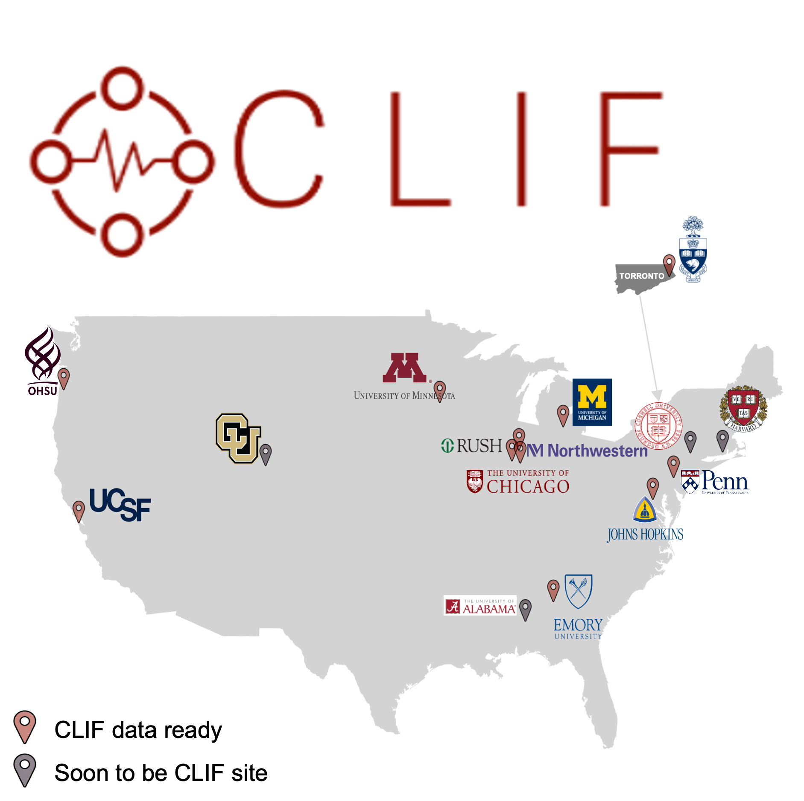

The table below showcases the characteristics and outcomes of ICU patient encounters across 11 CLIF consortium sites and MIMIC-IV. The cohort includes all adults (≥ 18 years) admitted to an ICU at each site across the consortium. This represents a diverse cohort of over 850,000 ICU patient encounters and provides valuable insights into critical care practices across different institutions.
| Site | Consortium Aggregate | Emory University | Johns Hopkins University | Northwestern University | Oregon Health & Science University | Rush University | University of California San Francisco | University of Chicago | University of Michigan | University of Minnesota | University of Pennsylvania | University of Toronto | MIMIC IV |
|---|---|---|---|---|---|---|---|---|---|---|---|---|---|
| Years | 2011-2024 | 2014-2021 | 2017-2024 | 2018-2024 | 2016-2024 | 2018-2024 | 2011-2024 | 2019-2024 | 2018-2024 | 2011-2024 | 2017-2024 | 2013-2021 | 2008-2019 |
| Hospitals | 48 | 4 | 5 | 8 | 2 | 1 | 6 | 1 | 1 | 11 | 6 | 3 | 1 |
| Total ICU encounters | 862400 | 121782 | 104641 | 105721 | 63357 | 50440 | 65750 | 26870 | 40584 | 144747 | 125249 | 13259 | 85162 |
| Unique patients | 680158 | 93718 | 85982 | 85003 | 53527 | 36637 | 53806 | 21384 | 34600 | 104910 | 97933 | 12658 | 64954 |
| Female n (%) | 306200 (45.0%) | 43236 (46.1%) | 39692 (46.2%) | 37862 (44.5%) | 22053 (41.2%) | 17449 (47.6%) | 25305 (47.0%) | 9369 (43.8%) | 14628 (42.3%) | 48888 (46.6%) | 43452 (44.4%) | 4266 (33.7%) | 28130 (43.3%) |
| Race n (%) | |||||||||||||
| Black | 141142 (20.8%) | 35415 (37.8%) | 24228 (28.2%) | 10514 (12.4%) | 1281 (2.4%) | 12970 (35.4%) | 3876 (7.2%) | 13017 (60.9%) | 3611 (10.4%) | 6366 (6.1%) | 29864 (30.5%) | 6061 (9.3%) | |
| White | 431473 (63.4%) | 49086 (52.4%) | 51118 (59.5%) | 62500 (73.5%) | 45191 (84.4%) | 15697 (42.8%) | 29610 (55.0%) | 5789 (27.1%) | 28148 (81.4%) | 88633 (84.5%) | 55701 (56.9%) | 43795 (67.4%) | |
| Other | 0 (0.0%) | 9217(9.8%) | 10636(11.3%) | 11989(12.8%) | 7055(7.5%) | 7970(8.5%) | 20320(21.7%) | 2578(2.8%) | 2841(3%) | 9911(10.6%) | 12368(13.2%) | 12658 (100.0%) | 15098(16.1%) |
| Hispanic n (%) | 40777 (6.0%) | 2805 (3.0%) | 3864 (4.5%) | 8043 (9.5%) | 3517 (6.6%) | 6544 (17.9%) | 8570 (15.9%) | 1353 (6.3%) | 875 (2.5%) | 1651 (1.6%) | 3555 (3.6%) | 2352 (3.6%) | |
| Total hospital days, median [Q1,Q3] | 6.9 [3.2,13.9] | 7.8 [4.2,13.9] | 7.3 [3.9,13.8] | 6.2 [3.3,11.8] | 6.1 [3.0,11.4] | 6.1 [3.2,11.2] | 7.3 [4.1,13.9] | 8.1 [4.3,15.0] | 8.3 [4.5,15.7] | 5.1 [2.7,10.2] | 6.9 [3.6,13.2] | 11.0 [6.2,20.1] | 7.0 [4.2,12.2] |
| Total ICU days, median [Q1,Q3] | 1.6 [0.8,3.1] | 1.9 [1.0,3.8] | 1.6 [0.9,3.1] | 1.4 [0.8,2.8] | 1.4 [0.8,2.7] | 1.7 [0.9,3.1] | 0.9 [0.4,1.9] | 1.8 [1.0,3.3] | 1.9 [0.9,3.8] | 1.5 [0.8,2.9] | 1.7 [0.9,3.1] | 2.8 [1.2,5.8] | 1.4 [0.8,2.8] |
| Hospital mortality n (%) | 119966 (13.9%) | 17824 (14.6%) | 15697 (15.0%) | 16270 (15.4%) | 8202 (12.9%) | 6152 (12.2%) | 6543 (10.0%) | 4227 (15.7%) | 5918 (14.6%) | 17759 (12.3%) | 19403 (15.5%) | 1971 (14.9%) | 12073 (14.2%) |
| SOFA-97 TOTAL, median [Q1,Q3] | 4.0 [1.0,6.0] | 3.0 [1.0,5.0] | 4.0 [2.0,7.0] | 4.0 [2.0,6.0] | 3.0 [1.0,6.0] | 3.0 [1.0,5.0] | 3.0 [1.0,5.0] | 4.0 [2.0,7.0] | 5.0 [2.0,8.0] | 3.0 [1.0,5.0] | 4.0 [2.0,6.0] | 4.0 [2.0,6.0] | 4.0 [2.0,6.0] |
| Vasopressor encounters n (%) | 317628 (36.8%) | 42103.0 (34.6%) | 37039.0 (35.4%) | 48743.0 (46.1%) | 26645.0 (42.1%) | 12597.0 (25.0%) | 20175.0 (30.7%) | 11510.0 (42.8%) | 15865.0 (39.1%) | 47353.0 (32.7%) | 51131.0 (40.8%) | 4467.0 (33.7%) | 27124.0 (31.8%) |
| Phenylephrine dose, median [Q1,Q3] | 0.4 [0.1,1.3] | 0.10 [0.00,0.80] | 0.50 [0.12,1.25] | 0.42 [0.10,1.11] | 0.30 [0.20,0.50] | 0.42 [0.16,1.63] | 0.48 [0.18,1.16] | 0.50 [0.15,1.62] | 0.50 [0.13,1.15] | 0.37 [0.10,0.89] | 0.46 [0.12,1.27] | 0.91 [0.20,2.35] | 0.50 [0.13,1.45] |
| Norepinephrine dose, median [Q1,Q3] | 0.1 [0.0,0.2] | 0.02 [0.00,0.10] | 0.06 [0.02,0.20] | 0.05 [0.01,0.13] | 0.04 [0.02,0.08] | 0.06 [0.02,0.19] | 0.06 [0.03,0.15] | 0.08 [0.03,0.24] | 0.05 [0.01,0.13] | 0.05 [0.02,0.13] | 0.05 [0.01,0.13] | 0.06 [0.02,0.18] | 0.07 [0.02,0.20] |
| Vasopressin dose, median [Q1,Q3] | 0.0 [0.0,0.0] | 0.02 [0.00,0.04] | 0.04 [0.01,0.04] | 0.03 [0.01,0.04] | 0.03 [0.03,0.04] | 0.03 [0.01,0.03] | 0.04 [0.03,0.04] | 0.03 [0.02,0.04] | 0.03 [0.02,0.06] | 0.04 [0.02,0.04] | 0.03 [0.02,0.04] | 0.04 [0.02,0.07] | 0.03 [0.01,0.04] |
| Angiotensin dose, median [Q1,Q3] | 0.0 [0.0,0.0] | 0.01 [0.00,0.03] | 0.03 [0.01,0.05] | 0.01 [0.01,0.01] | 0.02 [0.01,0.04] | 0.02 [0.01,0.04] | 0.03 [0.01,0.04] | 0.03 [0.01,0.04] | |||||
| Dopamine dose, median [Q1,Q3] | 4.0 [0.5,8.5] | 2.00 [0.00,6.39] | 4.00 [1.25,7.75] | 3.00 [0.50,8.00] | 5.00 [2.50,7.50] | 5.00 [0.00,7.50] | 4.00 [2.62,5.00] | 3.75 [2.00,8.75] | 3.00 [2.00,5.00] | 4.00 [1.50,8.00] | 4.00 [1.50,8.75] | 2.00 [1.20,6.00] | 4.01 [1.25,8.50] |
| Epinephrine dose, median [Q1,Q3] | 0.0 [0.0,0.1] | 0.01 [0.00,0.05] | 0.03 [0.01,0.07] | 0.03 [0.01,0.06] | 0.03 [0.02,0.06] | 0.02 [0.01,0.06] | 0.04 [0.02,0.07] | 0.04 [0.01,0.08] | 0.02 [0.01,0.04] | 0.03 [0.01,0.06] | 0.02 [0.01,0.05] | 0.04 [0.00,0.07] | 0.02 [0.01,0.05] |
| IMV encounters n (%) | 306667 (35.6%) | 51658 (42.4%) | 35197 (33.6%) | 32950 (31.2%) | 20652 (32.6%) | 12780 (25.3%) | 21314 (32.4%) | 11361 (42.3%) | 19124 (47.1%) | 46932 (32.4%) | 46830 (37.4%) | 7869 (59.3%) | 35274 (41.4%) |
| First location of intubation n(%) | |||||||||||||
| ICU | 230002 (75.0%) | 24233 (46.9%) | 28327 (80.5%) | 26941 (81.8%) | 18191 (88.1%) | 11509 (90.1%) | 15383 (72.2%) | 7868 (69.3%) | 15505 (81.1%) | 38258 (81.5%) | 39646 (84.7%) | 4141 (52.6%) | 34668 (98.3%) |
| ED | 42526 (13.9%) | 10564 (20.4%) | 5609 (15.9%) | 4458 (13.5%) | 1611 (7.8%) | 427 (3.3%) | 1008 (4.7%) | 3124 (27.5%) | 3155 (16.5%) | 5117 (10.9%) | 5103 (10.9%) | 2350 (29.9%) | 48 (0.1%) |
| Procedural | 16986 (5.5%) | 5716 (11.1%) | 969 (2.8%) | 1213 (3.7%) | 754 (3.7%) | 610 (4.8%) | 2085 (9.8%) | 247 (2.2%) | 129 (0.7%) | 3110 (6.6%) | 1054 (2.3%) | 1099 (14.0%) | 157 (0.4%) |
| Ward | 12999 (4.2%) | 11075 (21.4%) | 172 (0.5%) | 289 (0.9%) | 95 (0.5%) | 208 (1.6%) | 102 (0.5%) | 122 (1.1%) | 112 (0.6%) | 306 (0.7%) | 346 (0.7%) | 172 (2.2%) | 310 (0.9%) |
| Other | 0 (0.0%) | 70(0.14%) | 120(0.34%) | 49(0.15%) | 1(0%) | 26(0.2%) | 2736(12.84%) | 0(0%) | 223(1.17%) | 141(0.3%) | 681(1.45%) | 107(1.36%) | 91(0.26%) |
| Initial Mode of IMV n(%) | |||||||||||||
| Assist Control-Volume Control | 183708 (59.9%) | 22919 (44.4%) | 16793 (47.7%) | 23613 (71.7%) | 14618 (70.8%) | 836 (6.5%) | 11242 (52.7%) | 10248 (90.2%) | 5219 (27.3%) | 41646 (88.7%) | 29948 (64.0%) | 6626 (84.2%) | 16781 (47.6%) |
| Pressure-Regulated Volume Control | 39011 (12.7%) | 6186 (12.0%) | 7814 (22.2%) | 2110 (6.4%) | 1324 (6.4%) | 8593 (67.2%) | 5 (0.0%) | 12 (0.1%) | 12564 (65.7%) | 397 (0.8%) | 6 (0.0%) | 13170 (37.3%) | |
| SIMV | 32647 (10.6%) | 7521 (14.6%) | 6645 (18.9%) | 1640 (5.0%) | 231 (1.1%) | 142 (1.1%) | 213 (1.0%) | 159 (1.4%) | 29 (0.2%) | 2366 (5.0%) | 13701 (29.3%) | 391 (1.1%) | |
| Pressure support/CPAP | 21700 (7.1%) | 3134 (6.1%) | 3173 (9.0%) | 2697 (8.2%) | 2652 (12.8%) | 956 (7.5%) | 4391 (20.6%) | 486 (4.3%) | 214 (1.1%) | 1024 (2.2%) | 2268 (4.8%) | 705 (9.0%) | 3792 (10.8%) |
| Pressure Control | 538 (0.2%) | 953 (1.8%) | 485 (1.4%) | 1159 (3.5%) | 640 (3.1%) | 1788 (14.0%) | 221 (1.0%) | 227 (2.0%) | 712 (3.7%) | 479 (1.0%) | 274 (0.6%) | 175 (0.5%) | |
| Assist Control-Pressure Control | 6938 (2.3%) | 953 (1.8%) | 538 (6.8%) | ||||||||||
| Volume Support | 79 (0.0%) | 34 (0.2%) | 1 (0.0%) | 41 (0.4%) | 3 (0.0%) | 244 (0.7%) | |||||||
| Other | 22046 (7.2%) | 10945(21.19%) | 287(0.82%) | 1731(5.25%) | 1153(5.58%) | 465(3.64%) | 5241(24.59%) | 188(1.65%) | 386(2.02%) | 1020(2.17%) | 630(1.35%) | 0 (0%) | 721(2.04%) |
| Ventilator settings Median [Q1, Q2] | |||||||||||||
| Peep | 5.0 [5.0,8.0] | 6.00 [5.00,8.00] | 5.00 [5.00,8.00] | 5.00 [5.00,7.00] | 5.00 [5.00,8.00] | 8.00 [5.75,8.00] | 5.00 [5.00,8.00] | 5.00 [5.00,5.00] | 5.00 [5.00,10.00] | 5.00 [5.00,8.00] | 5.00 [5.00,8.00] | 5.00 [5.00,8.00] | 5.00 [5.00,8.00] |
| FiO2 | 0.4 [0.3,0.6] | 0.40 [0.30,0.62] | 0.40 [0.30,0.60] | 0.40 [0.30,0.60] | 0.47 [0.30,0.92] | 0.40 [0.30,0.60] | 0.40 [0.30,0.70] | 0.40 [0.40,0.60] | 0.40 [0.30,0.70] | 0.40 [0.27,0.53] | 0.40 [0.35,0.60] | 0.35 [0.25,0.50] | 0.45 [0.40,0.62] |
| Respiratory rate | 16.0 [12.0,21.0] | 16.00 [14.00,20.00] | 16.00 [15.00,21.00] | 16.00 [14.00,20.00] | 16.00 [14.00,20.00] | 16.00 [14.00,20.00] | 16.00 [12.00,22.00] | 16.00 [12.00,20.00] | 16.00 [14.00,20.00] | 16.00 [12.00,18.00] | 19.00 [14.75,25.00] | 12.00 [0.00,22.00] | 16.00 [14.00,20.00] |
| Tidal Volume | 450.0 [380.0,500.0] | 450.00 [380.00,500.00] | 420.00 [375.00,487.50] | 450.00 [400.00,500.00] | 450.00 [400.00,520.00] | 400.00 [340.00,460.00] | 450.00 [380.00,500.00] | 440.00 [380.00,460.00] | 450.00 [365.00,500.00] | 500.00 [400.00,550.00] | 450.00 [400.00,500.00] | 443.72 [358.33,566.67] | 450.00 [400.00,500.00] |